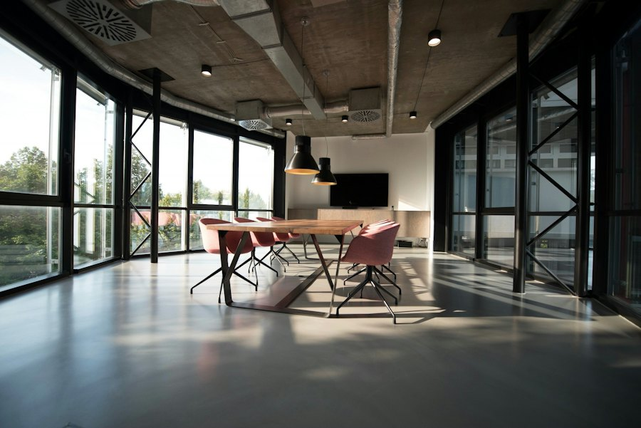
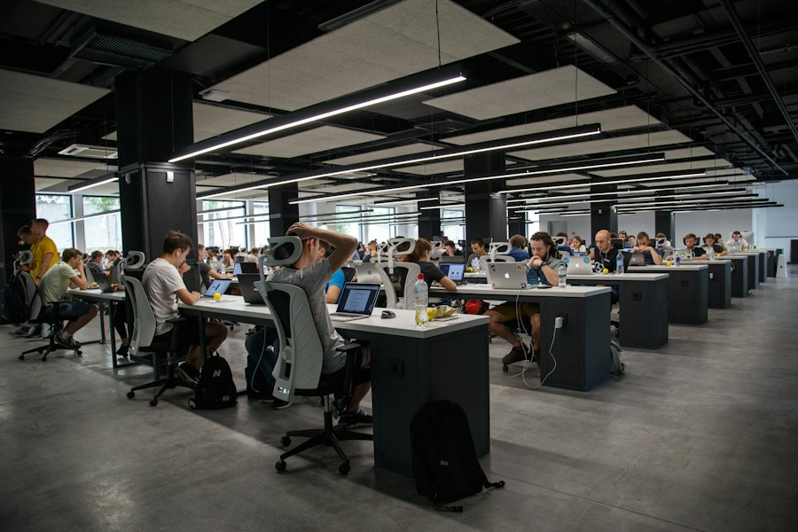
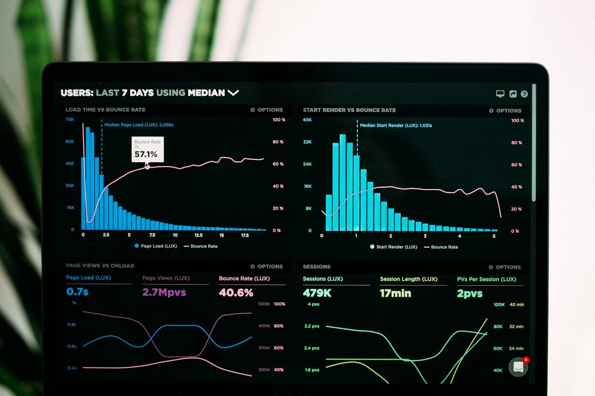

Programm- & Projektmanagement
Programm- und Multiprojektmanagement (Enterprise Scale), Cut-Over-, Migrations- und Go-Live-Management, IT-Governance, Risiko- und Eskalationsmanagement, Steuerung von Dienstleistern

Senior Program Manager
IT-Infrastruktur- und Cloud-Transformationen im Enterprise-Umfeld — von der Planung über Cut-Over und Go-Live bis zur Stabilisierung im Betrieb. Dazu KI-Automatisierung für KMU.
IT Infrastructure Transformation
Über mich
Senior Program Manager für IT-Infrastruktur- und Cloud-Transformationen im Enterprise-Umfeld mit Fokus auf Legacy-to-Cloud, Hybrid IT und produktionskritische Migrationen. Über 25 Jahre im IT-Projekt- und Programmmanagement, in Konzern- und Beratungsumfeldern. Verantwortlich für komplexe Transformationsprogramme unter hohen Anforderungen an Stabilität, Zeit und Budget, inklusive Cut-Over-, Migrations- und Go-Live-Steuerung von der Konzeption bis zur produktiven Übergabe.
Parallel entwickle ich KI-Agenten und Prozessautomatisierungen für kleine und mittlere Unternehmen. Meine Stärke: komplexe Transformationen in einen stabilen, skalierbaren Betrieb überführen.
CV herunterladen
Programm- und Multiprojektmanagement (Enterprise Scale), Cut-Over-, Migrations- und Go-Live-Management, IT-Governance, Risiko- und Eskalationsmanagement, Steuerung von Dienstleistern
Cloud- und Infrastrukturtransformation (Azure / Hybrid IT), Netzwerk und Konnektivität, Unified Communications und Plattformmigration, technische Steuerung von Infrastruktur- und Cloud-Teams
KI-Agentenentwicklung und Prozessautomatisierung (RAG, LLM-Integration) für KMU, Python, Claude Code und Anthropic API
Stakeholder-Management auf Senior- und Executive-Level, Steering Committees, direkte Zusammenarbeit mit CIO und Senior Management
Werdegang
Über 25 Jahre Erfahrung in Infrastruktur-, Plattform- und Transformationsprojekten.



Gesamtverantwortung für ein globales Infrastruktur- und Cloud-Transformationsprogramm mit parallelen Streams (Server, Netzwerk/LAN, Telefonie). Führung der technischen Project Leads und internationaler Infrastruktur-, Netzwerk- und Cloud-Teams, Steuerung der Provider, Migration von Legacy-Infrastrukturen in Azure- und Hybrid-Architekturen. Integrierte Cut-Over-Pläne mit Freeze-Perioden, Readiness-Kriterien, Rollback, War-Room, Runbooks, Go-/No-Go und Hypercare. Governance- und Reportingstrukturen, direkte Zusammenarbeit mit CIO und Senior Management.
Referenzprojekt LAN-Migration: Am großen Produktionsstandort Vittorio Veneto (Italien) vollständiger Austausch von Switches, Verkabelung und Core-Switches (über 20 Jahre alt) in mehreren Wellen, Cut-Over innerhalb einer Woche während der Betriebsferien im August. Keine Störungen nach der Migration.
Projektmanagement im europaweiten IT-Programm Dokumentenmanagement (u. a. Imagemaster-Upgrade) im Konzernumfeld sowie im PMO Sourcing 2.0. Koordination von Fachbereichen, IT und externen Partnern.
Einführung des ewocon Quickstart Model für Portfolio-, Projekt- und Workmanagement (Templates auf Basis PRINCE2), Discovery 360 (agile Workshopmethode) zur Analyse von Business-Anforderungen und Entwicklung von Solution Designs, beratende Unterstützung beim Aufbau eines IT-Sicherheits-Managementsystems nach ISO 27001.
Fachliche Führung von 3 Service Managern, SLA-Management zwischen Fachbereichen und Providern, Deputy Transition Manager beim Providerwechsel HP → CTS, Rollout und Schulung von über 120 Außendienstmitarbeitern.
Outsourcing und Migration der Entwicklungs- und Testumgebungen (Solaris, HP-UX, AIX, x86) eines Telekommunikationsunternehmens ins HP-Rechenzentrum, Pilotierung mit Cloning-Ansatz, Wissenstransfer an das Offshore-Team.
KI & Automatisierung
KI-Agentenentwicklung und Prozessautomatisierung (RAG, LLM-Integration) für KMU, entwickelt mit Claude Code und der Anthropic API in Python.

01
Wiegescheine werden automatisch erfasst und digital weiterverarbeitet. Rund 90 % weniger Zeitaufwand.
02
Rechnungen werden automatisiert verarbeitet. Die Bearbeitungszeit sinkt von 45 auf 5 Minuten.
03
Buchhaltungsdaten werden automatisch für DATEV aufbereitet. Statt 90 Minuten dauert es 5 Minuten.
04
KI-gestützter Telefonassistent für einen Containerdienst.
05
Rack-Module selbst aufgebaut.
06
Automatisierter Trading-Bot in Eigenregie, umgesetzt mit Claude Code und der Anthropic API in Python. Weitere Details zu Architektur und Ergebnissen folgen in Kürze.
Zu Programmleitung, IT-Transformation oder dem Trading-Bot-Projekt. Ich freue mich auf eine Nachricht.
E-Mail schreiben